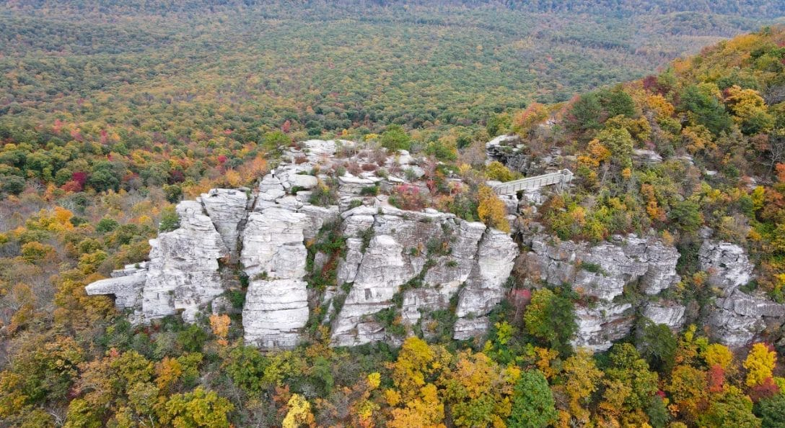

The valley around Bryce is quietly one of Virginia's best-kept wine and beer regions — the oldest winery in the state, award-winning small producers, farm breweries, and orchard cideries, most of them a short, scenic drive from Aspen Way South. Here are our favorites, closest first.
Estate wines and mountain views at the foot of Great North Mountain — known for its Riesling and the Fossil Hill reds.
Map & hours ↗A family-run tasting room beneath historic Third Hill, with sweeping valley views and small-batch Virginia wines.
Map & hours ↗Virginia's oldest winery, founded in 1976 — a relaxed patio, long valley views, and decades-honed Shenandoah reds and whites.
Map & hours ↗A quiet, dog-friendly vineyard tucked toward Wolf Gap, with estate-grown wines and a laid-back tasting barn.
Map & hours ↗Award-winning wines — its flagship Clio has topped Virginia's best — on a striking estate along the Shenandoah River.
Map & hours ↗A hilltop winery and bistro with a European feel — wood-fired fare and long views out over the valley.
Map & hours ↗The closest pour to your door — rotating Pale Fire drafts and Detroit-style pizza, right in the heart of Basye.
Map & hours ↗A working century farm and brewery — farm-brewed beer, wood-fired pizza, a dog park, and pick-your-own in season.
Map & hours ↗Craft beer in a beautifully restored industrial building, with big outdoor seating in downtown Woodstock.
Map & hours ↗Estate hard ciders pressed from orchard-grown apples, poured in a tasting room with rows of apple trees out the window.
Map & hours ↗Drive times are approximate from Aspen Way South. Hours and tasting availability change seasonally — please check each venue before you go, and if you're making a day of it, plan a designated driver. This is a hand-picked list, not the whole trail; the Bryce Resort nearby-attractions guide and the Shenandoah Spirits Trail have more.
Two homes side by side on Aspen Way South, minutes from the trail. Bring the group and split the tastings.
CHECK AVAILABILITY